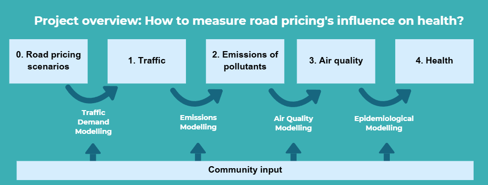

We created this interactive map in a process with several steps that build onto each other. In collaboration with community partner Greater Greater Washington, we selected six potential cordon-based road pricing scenarios. These scenarios are the same as those considered in the DC Decongestion Pricing Study Report, which was commissioned by the District Department of Transportation in 2019. We modelled how these different designs would influence traffic patterns, how this would impact emissions from cars, and in turn, how this would impact air quality. The interactive map shows these findings on air quality and allows you to adjust variables such as seasons, policy design, and air pollutants. The next step will be estimating how these changes in air quality will influence health outcomes across the DC area.

The interactive map is based on data for the year 2017, as this was the latest year for which all required data was available, which was not affected by COVID-19 pandemic measures.
The Community Multiscale Air Quality (CMAQ) Modelling System is a tool developed by the US Environmental Protection Agency. This model uses simulations of meteorology, emissions, and chemical processes in the atmosphere to predict air quality. The model can predict the concentrations of several pollutants, including particulate matter, ozone, and several air toxics.
The baseline scenario shows absolute pollutant concentration from the CMAQ model, this estimates the air quality without any road pricing policies.
A small cordon area in downtown DC. Vehicles on the Interstate I-395 are excluded from paying.
A small cordon in downtown DC. Passenger vehicles on Interstate-395 are required to pay the toll.
A larger pricing cordon covering most of DC. Vehicles on the Interstate-395 highway are required to also pay the toll.
For each of these 3 cordon scenarios, we modelled a low toll and a high toll scenario:
The maps for each scenario show the difference in concentration compared to the baseline situation. This allows us to understand the impacts from the road pricing policy-intervention itself.
The intensity of the colors indicates the magnitude of the change.
Exposure to NO2, O3, and/or PM2.5 can contribute to a range of health effects, including development or worsening of asthma, respiratory symptoms (such as coughing and wheezing), cardiovascular diseases (such as strokes), and premature mortality. This can lead to an increase in emergency department visits and hospital admissions.
Traffic demand modeling and air quality modeling performed by the REACH Center. Research reported in this web tool was supported by the National Institute of Environmental Health Sciences of the National Institutes of Health under award number 1-P20ES036775. This data has not been peer reviewed.
Road pricing is an umbrella term used for different approaches that charge drivers for using roads. This includes congestion pricing, which specifically puts a price on driving in busy areas downtown that often have traffic jams during rush hours, with the aim to reduce congestion. This encourages drivers to consider different modes of transportation or travel times. Cordon pricing and area pricing are specific mechanisms of congestion pricing. Cordon pricing charges vehicles every time they cross the border into the zone, whereas area pricing charges any vehicle, even if they stay within the area.
In our study, we refer to “road pricing” to examine different cordon-based congestion pricing. Our community partner Greater Greater Washington similarly uses this term as it highlights not just the benefits of reduced congestion but also the other associated benefits such as improved health.
In transportation science, the word “cordon” refers to the boundary of the zone where vehicles will pay a fee whenever they cross this line.
This depends on whether “cordon pricing” or “area pricing” is applied as a specific mechanism of congestion pricing. Our study examines cordon-based pricing, which means vehicles will only be charged when they cross the border from outside into the tolled zone downtown.
In 1975, Singapore was the first city that implemented a congestion pricing policy. It successfully reduced traffic jams and improved air quality, which inspired similar policies in several other cities across the world. This includes London’s congestion charge zone (2003), Stockholm's congestion tax (2007), Gothenburg’s congestion tax (2013), and Milan’s Area C (2012). In 2025, New York City was the first North American city to implement a congestion pricing policy with its Central Business District Tolling Program (2025).
In most places, fees are collected through an electronic tolling system. Scanners that can automatically recognise number plates are installed in all roads through which vehicles can enter the tolled zone. Registered vehicle owners are billed electronically with number plates being linked to pre-paid accounts or through mail.
In the road pricing designs in our study, we did not take this into account. However, most congestion pricing policies offer discounts for people with low incomes. In New York City for example, drivers with low income receive a 50% discount on the peak toll.
Some types of road pricing policies are already used in the DMV area. This includes Express Lanes I-95 and I-395 in Virginia, where you can choose to pay a fee which allows you to be on a faster-driving lane with less traffic. Another example is the I-66 highway, which becomes a toll road during peak hours, exempting high occupancy vehicles (HOV). However, there are currently no cordon-based congestion pricing policies in the DC area, which apply to an entire area rather than one particular highway. This is what our study examines.
Road pricing leads to higher traffic speeds, less time spent commuting, and fewer crashes with pedestrians. The additional revenue collected through the tolls would allow the DC government to increase investment in buses, metro, and bicycle infrastructure. The first evaluation of New York City’s road pricing policy showed promising results. Vehicle speeds increased by 4.6%, and the city was on track to generate $500M net revenue in its first year (MTA Report). This revenue will be used to fund, for example, upgraded subway lines and new railcars and buses (MTA Transit).
Pricing could pose a financial burden for people who might need to drive into the proposed cordon area because they do not have access to public transport. In DC, vehicle ownership is much lower among people with extremely low income (40%) compared to people with middle (64%) or upper income (85%). The District Department of Transportation (DDOT) provides a range of supportive services for people with low-income, ranging from 24/7 bus service, pre-tax benefits for transit, and transit discounts. A DC-focused study examines what would happen if revenue from the road pricing were invested in making buses free for DC residents and improving bus service on key roads (GGWash). While traveling would be 2% less convenient for average residents in the metro area, it would improve access by 0.6% for the average DC resident and 10% for DC residents with low-income.
In 2019, mayor Muriel Bowser commissioned a study on road pricing through the District Department of Transportation (DDOT). This report was completed in 2021, but was only released in 2026 (DDOT Release). Our community partner Greater Greater Washington was involved in litigation against the District, as the report was not released by its required publication date (2020). Alongside the report, Mayor Bowser published a letter in March 2026 and argued that the study has methodological flaws as it uses pre-pandemic data (Mayor's Letter). The data used is indeed from 2017, as this report was intended to be the first step leading up to more research. And indeed, more people in the DMV area have compressed schedules or work from home (14.7% in 2025) than before the pandemic (10.2% in 2016) (MWCOG Commute Survey). While 56.7% of commuters drove alone in 2025 compared to 61.0% in 2016, this proportion is still very high for a city with as extensive public transit infrastructure as Washington, DC.
Road pricing could reduce the number of people who travel to downtown DC, and thereby reduce income for businesses downtown, which is a concern in Mayor Muriel Bowser’s response to the DDOT congestion pricing report. The connection between fewer trips by car and reducing business activity is tenuous and hard to prove. A study examining the new congestion pricing policy in New York City finds that the policy had little-to-no effect on transactions at shops and restaurants (NBER).
The study shows the impacts of different designs for road pricing in Washington, DC. These findings help policymakers understand the likely impacts of these different designs and show the impact of decisions such as making the tolled area larger or including the I-395 highway. The data indicate that using lower prices for the tolls can result in reduced air pollution while avoiding that the traffic and pollutants simply shift elsewhere.
If this highway is included in the tolls, vehicles that are just passing through DC would likely drive longer and take a detour to avoid paying the toll (Reich, 2025). This would contribute to inconvenience without contributing to revenue or reduced emissions as people simply drive somewhere else. For similar reasons, the New York City program excluded certain highways. In this study, we wanted to examine if including the highway might shift pollution elsewhere.
This research project started in 2025, and traffic and emissions data from 2017 were selected as the most representative data available at the time. The COVID-19 pandemic and isolation measures strongly disrupted normal commuting patterns. While more people are working from home than before, the situation is now returning to pre-pandemic trends. In 2025, the rate of commuters driving alone went back up to 56.7%, close to the pre-pandemic rate of 61.0% in 2016 (MWCOG Commute Survey). We will conduct an additional analysis to check how applicable the 2017 data are today.
Emission of nitrogen oxides (NOx, includes NO and NO2) can reduce ozone concentrations. This is because of an atmospheric process called "titration", where freshly emitted NOx “consumes” ozone and thereby reduces ozone levels. This means that if NOx decreases, ozone concentrations increase.
The number of people exposed to air pollution in the DC area is high, which means that even small reductions in air pollution can contribute to significant improvements in population health. We are currently working on quantifying how this policy impacts health, focusing on how many cases of mortality, asthma development, and emergency department visits can be attributed to air pollution.
The research was designed in collaboration with community group Greater Greater Washington (GGWash) throughout every step of the modelling process. GGWash is a nonprofit that focuses on sustainable land use, transportation and housing in DC, focused on fairness and communal responsibility. This expertise is used throughout the project to identify best methods for study design.
The DC area attains the National Ambient Air Quality Standards (NAAQS) from the Clean Air Act. However, research increasingly shows that even below these standards, exposure to air pollution is associated with a higher risk of air pollution-related mortality (JAMA, 2017). Moreover, the average for the entire area hides the fact that in some places within DC, the concentration of pollutants is much higher and more worrisome, particularly during rush hour and the summer months.
The NAAQS are determined by the US Environmental Protection Agency (EPA), which is obligatory under the Clean Air Act. The EPA reviews these guidelines every 5 years to set a legal national standard to protect public health across the US. These standards can be subject to pressure from political administrations and businesses. For example, the EPA tightened the regulations for PM2.5 from 12 µg/m³ to 9 µg/m³ during the 2024 review. However, new guidelines were set to be revised in 2025 under EPA Administrator Zeldin's announcement of "31 Historic Actions to Power the Great American Comeback." The reason for revising the guidelines earlier than the regular cycle is that stricter regulations "shut down opportunities for American manufacturing and small businesses" (EPA announcement).
The WHO 2021 Air Quality Guidelines (AQG) tend to be stricter than the NAAQS. The WHO guidelines do not consider the feasibility of the standards but reflect the increasing amount of academic evidence that there is no level of exposure to air pollution which is safe for human health (BMJ, 2021).
These thresholds take into account different health risks that are associated with different durations of exposure. Short-term standards (1-hour or 24-hour) are supposed to prevent high peak exposures, which can trigger acute crises such as asthma attacks that require emergency department visits. Long-term standards aim to address the lower chronic levels of exposure that build up over time, contributing to premature mortality and morbidity.
Ozone can be "good" and "bad" for humans. This depends on whether it is part of a protective layer high up in the atmosphere or if it is in the air close to the ground, which we breathe in. Ozone forms a protective layer that absorbs solar UV radiation at 15–35 km height in the atmosphere. However, at ground level, ozone is a harmful pollutant which contributes to smog and causes a range of respiratory health issues.